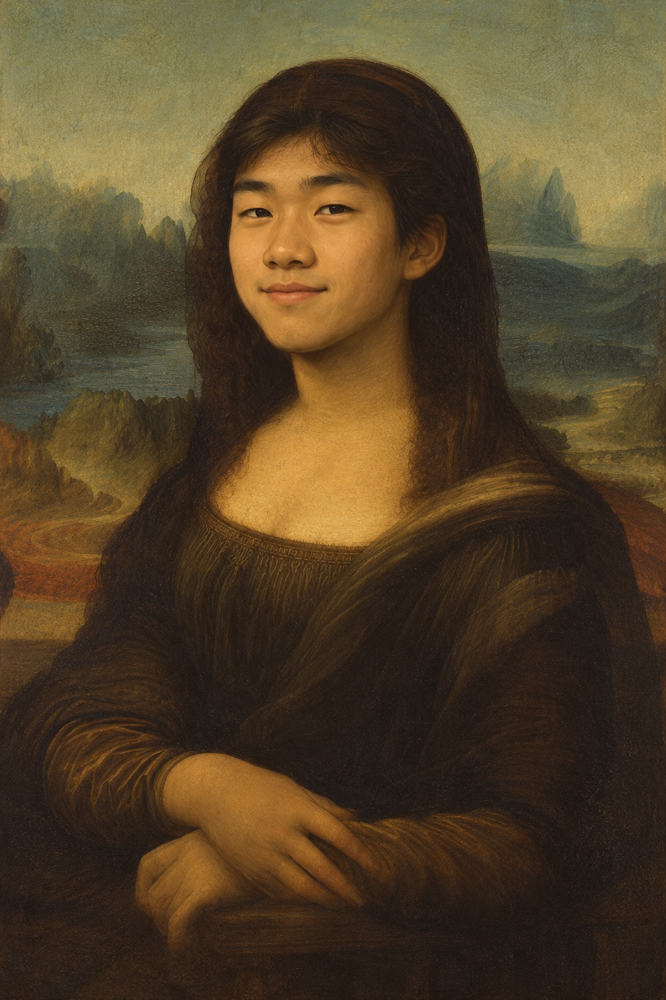

<title>Salle des États</title>
<meta name="claude:viewport-fit-sides" content="cover">
<link rel="preconnect" href="https://fonts.googleapis.com">
<link rel="preconnect" href="https://fonts.gstatic.com" crossorigin>
<link rel="stylesheet" href="https://fonts.googleapis.com/css2?family=Cormorant+Garamond:ital,wght@0,500;0,600;1,500&family=Jost:wght@400;500;600&display=swap">
<style>
  /* Layout: one gallery room in a single CSS 3D scene. The wall is the focal plane (z = 0),
     the parquet floor hinges out from the wall's base toward the viewer, and the framed
     painting hangs a few centimetres off the wall. */
  :root {
    --wall: #3b6350;
    --wall-deep: #26432f;
    --wall-lit: #538470;
    --skirting: #1f3329;
    --gold-hi: #fff1b8;
    --gold: #d4a845;
    --gold-mid: #a67a26;
    --gold-lo: #5e400c;
    --panel: #b98c5a;
    --panel-dark: #7a5532;
    --paper: #f3eee2;
    --ink: #22201b;
    --ink-soft: #5b564b;
    --void: #0e1a14;

    --display: "Cormorant Garamond", "Cormorant", Garamond, "Times New Roman", serif;
    --body: "Jost", "Futura", "Avenir Next", "Helvetica Neue", Arial, sans-serif;

    --base: 80vh;                   /* where the wall meets the floor */
    --w: min(34vh, 56vw);           /* width of the painted surface */
    --fw: calc(var(--w) * 0.14);    /* frame moulding width */
    --cw: calc(var(--w) + var(--fw) * 2.24);              /* outer frame width */
    --ch: calc(var(--w) * 1.5 + var(--fw) * 2.24);        /* outer frame height (1024 × 1536 image) */
    --d: calc(var(--fw) * 0.55);    /* frame depth */
    color-scheme: dark;
  }

  html, body { height: 100%; }
  body {
    background: var(--void);
    color: var(--paper);
    font-family: var(--body);
    overflow: hidden;
  }

  .scene {
    position: fixed;
    inset: 0;
    overflow: hidden;
    perspective: 130vh;
    perspective-origin: 50% 42%;
    background: var(--void);
  }
  .world, .world * { transform-style: preserve-3d; }
  .world { position: absolute; inset: 0; }

  /* ---------- wall ---------- */
  .wall {
    position: absolute;
    left: -10vw; right: -10vw; top: 0;
    height: var(--base);
    background:
      linear-gradient(180deg, rgba(0,0,0,0.35), transparent 18%, transparent 82%, rgba(0,0,0,0.45)),
      radial-gradient(ellipse 38% 55% at 50% 42%, rgba(255, 236, 190, 0.22), transparent 70%),
      radial-gradient(ellipse 90% 100% at 50% 35%, var(--wall-lit), var(--wall) 45%, var(--wall-deep) 100%);
  }
  .wall::before {               /* fabric wall covering: faint weave */
    content: "";
    position: absolute;
    inset: 0;
    background:
      repeating-linear-gradient(90deg, rgba(0,0,0,0.05) 0 1px, transparent 1px 3px),
      repeating-linear-gradient(0deg, rgba(255,255,255,0.025) 0 1px, transparent 1px 4px);
  }

  /* skirting board: a shallow box standing proud of the wall */
  .skirting {
    position: absolute;
    left: -10vw; right: -10vw;
    top: calc(var(--base) - 3.2vh);
    height: 3.2vh;
    transform: translateZ(1.4vh);
    background: linear-gradient(180deg, #2a4437, var(--skirting) 30%, #12201a);
    box-shadow: inset 0 1px 0 rgba(255,255,255,0.08);
  }
  .skirting::before {           /* top cap, folding back to the wall */
    content: "";
    position: absolute;
    left: 0; right: 0; top: 0;
    height: 1.4vh;
    transform-origin: top;
    transform: rotateX(-90deg);
    background: linear-gradient(180deg, #355445, #2a4437);
  }

  /* ---------- floor ---------- */
  .floor {
    position: absolute;
    left: -60vw; right: -60vw;
    top: var(--base);
    height: 110vh;
    transform-origin: top center;
    transform: rotateX(90deg);
    background-color: #4a321f;
    background-size: auto, auto, auto, 30vh 30vh;
  }
  .floor::after {               /* shading: contact shadow at the wall, light pool, falloff toward the viewer */
    content: "";
    position: absolute;
    inset: 0;
    background:
      linear-gradient(180deg, rgba(0,0,0,0.75) 0, rgba(0,0,0,0.25) 1.2%, transparent 4%),
      radial-gradient(ellipse 14% 7% at 50% 2%, rgba(255, 228, 175, 0.28), transparent 100%),
      linear-gradient(90deg, rgba(0,0,0,0.55), transparent 35%, transparent 65%, rgba(0,0,0,0.55)),
      linear-gradient(180deg, transparent 8%, rgba(0,0,0,0.45) 30%);
  }

  /* ---------- painting ---------- */
  .hang {
    position: absolute;
    left: 0; right: 0; top: 0;
    height: calc(var(--base) - 3.2vh);
    display: grid;
    place-items: center;
    padding-left: max(16px, env(safe-area-inset-left, 0px));
    padding-right: max(16px, env(safe-area-inset-right, 0px));
  }
  .stage { position: relative; width: var(--cw); height: var(--ch); }

  .shadow {
    position: absolute;
    inset: 3%;
    background: rgba(5, 12, 8, 0.8);
    filter: blur(20px);
    border-radius: 6px;
    will-change: transform, opacity;
    pointer-events: none;
  }

  .card {
    position: absolute;
    inset: 0;
    will-change: transform;
    cursor: grab;
    touch-action: none;
    user-select: none;
    -webkit-user-select: none;
    outline: none;
  }
  .card.dragging { cursor: grabbing; }
  .card:focus-visible .frame { outline: 3px solid var(--paper); outline-offset: 4px; }

  .face {
    position: absolute;
    inset: 0;
    backface-visibility: hidden;
    -webkit-backface-visibility: hidden;
  }
  .front { transform: translateZ(calc(var(--d) / 2)); }
  .front * { transform-style: flat; }

  /* the four edges of the frame, so it has thickness when it turns */
  .edge { position: absolute; }
  .edge.l, .edge.r {
    top: 0; height: 100%;
    width: var(--d);
    left: calc(50% - var(--d) / 2);
    background: linear-gradient(180deg, var(--gold-mid), var(--gold-lo) 40%, var(--gold-mid) 70%, var(--gold-lo));
  }
  .edge.r { transform: rotateY(90deg) translateZ(calc(var(--cw) / 2)); }
  .edge.l { transform: rotateY(-90deg) translateZ(calc(var(--cw) / 2)); filter: brightness(0.8); }
  .edge.t, .edge.b {
    left: 0; width: 100%;
    height: var(--d);
    top: calc(50% - var(--d) / 2);
    background: linear-gradient(90deg, var(--gold-lo), var(--gold) 30%, var(--gold-hi) 50%, var(--gold) 70%, var(--gold-lo));
  }
  .edge.t { transform: rotateX(90deg) translateZ(calc(var(--ch) / 2)); }
  .edge.b { transform: rotateX(-90deg) translateZ(calc(var(--ch) / 2)); filter: brightness(0.55); }

  .frame {
    position: absolute;
    inset: 0;
    padding: var(--fw);
    background:
      linear-gradient(135deg,
        var(--gold-lo) 0%, var(--gold) 14%, var(--gold-hi) 24%, var(--gold-mid) 38%,
        var(--gold-lo) 50%, var(--gold) 64%, var(--gold-hi) 76%, var(--gold-mid) 90%, var(--gold-lo) 100%);
    box-shadow:
      inset 0 0 0 2px var(--gold-lo),
      inset 0 0 0 5px var(--gold-hi),
      inset 0 0 0 8px var(--gold-mid),
      inset 0 0 calc(var(--fw) * 0.5) rgba(60, 35, 0, 0.6);
  }
  .frame::before {              /* carved bead band running round the moulding */
    content: "";
    position: absolute;
    inset: calc(var(--fw) * 0.24);
    border: calc(var(--fw) * 0.22) solid transparent;
    border-image: repeating-linear-gradient(45deg,
      var(--gold-hi) 0 3px, var(--gold) 3px 5px, var(--gold-lo) 5px 7px, var(--gold-mid) 7px 9px) 1;
    box-shadow:
      0 0 0 1px rgba(70, 45, 5, 0.7),
      inset 0 0 0 1px rgba(70, 45, 5, 0.7);
    opacity: 0.9;
    pointer-events: none;
  }
  .sight {                      /* thin bevel where the gilding meets the panel */
    position: relative;
    padding: calc(var(--fw) * 0.12);
    background: linear-gradient(135deg, var(--gold-hi), var(--gold-mid) 50%, var(--gold-lo));
    box-shadow: inset 0 2px 6px rgba(40, 20, 0, 0.6);
  }
  .sight img {
    display: block;
    width: var(--w);
    max-width: none;
    aspect-ratio: 1024 / 1536;
    object-fit: cover;
    pointer-events: none;
    -webkit-user-drag: none;
  }
  .varnish {
    position: absolute;
    inset: calc(var(--fw) * 0.12);
    background: radial-gradient(ellipse at 50% 40%, transparent 55%, rgba(30, 20, 5, 0.35));
    box-shadow: inset 0 calc(var(--fw) * 0.12) calc(var(--fw) * 0.2) rgba(20, 10, 0, 0.55);
    pointer-events: none;
  }
  .glare {
    position: absolute;
    inset: 0;
    background: radial-gradient(circle at var(--gx, 50%) var(--gy, 30%),
      rgba(255, 250, 230, 0.55), rgba(255, 250, 230, 0.12) 28%, transparent 55%);
    mix-blend-mode: soft-light;
    opacity: var(--go, 0);
    pointer-events: none;
  }

  /* back: poplar panel and frame reverse */
  .back {
    transform: translateZ(calc(var(--d) / -2)) rotateY(180deg);
    padding: calc(var(--fw) * 0.55);
    background: linear-gradient(135deg, #3a2611, #5a3c1c 40%, #2e1d0c);
    box-shadow: inset 0 0 0 2px #1d1206, inset 0 0 18px rgba(0,0,0,0.6);
  }
  .back * { transform-style: flat; }
  .panel {
    position: relative;
    height: 100%;
    background:
      repeating-linear-gradient(90deg, rgba(60, 35, 10, 0.18) 0 1px, transparent 1px 7px),
      repeating-linear-gradient(88deg, rgba(255, 230, 190, 0.08) 0 2px, transparent 2px 19px),
      linear-gradient(90deg, var(--panel-dark), var(--panel) 30%, #c79b68 55%, var(--panel) 80%, var(--panel-dark));
    box-shadow: inset 0 0 24px rgba(40, 20, 0, 0.55);
    overflow: hidden;
  }
  .brace {
    position: absolute;
    left: -2%; right: -2%;
    height: 7%;
    background: linear-gradient(180deg, #8a5f36, #6a4523 60%, #4a2f16);
    box-shadow: 0 4px 8px rgba(0,0,0,0.45);
  }
  .brace.top { top: 18%; }
  .brace.bottom { bottom: 18%; }
  .label {
    position: absolute;
    left: 50%;
    top: 50%;
    transform: translate(-50%, -50%) rotate(-2deg);
    width: 82%;
    padding: 7% 8%;
    background: var(--paper);
    color: var(--ink);
    box-shadow: 0 2px 6px rgba(0,0,0,0.35);
    font-size: clamp(9px, calc(var(--w) * 0.045), 14px);
    line-height: 1.45;
    display: grid;
    gap: 0.6em;
  }
  .label strong {
    font-family: var(--display);
    font-size: 1.8em;
    font-weight: 600;
    line-height: 1;
  }
  .label .roles {
    list-style: none;
    margin: 0;
    padding: 0 0 0.6em;
    border-bottom: 1px solid rgba(34, 32, 27, 0.18);
    display: grid;
    gap: 0.15em;
  }
  .label p { margin: 0; color: var(--ink-soft); }
  .label .links { display: grid; gap: 0.2em; }
  .label a {
    display: block;
    color: var(--ink);
    text-decoration: underline;
    text-decoration-color: var(--gold-mid);
    text-underline-offset: 2px;
    overflow-wrap: anywhere;
    cursor: pointer;
  }
  .label a:focus-visible { outline: 2px solid var(--gold-mid); outline-offset: 2px; }
  .chalk {
    position: absolute;
    left: 10%;
    bottom: 6%;
    font-family: var(--display);
    font-style: italic;
    font-size: clamp(10px, calc(var(--w) * 0.07), 22px);
    color: rgba(250, 245, 235, 0.7);
    transform: rotate(-6deg);
  }
  .seal {
    position: absolute;
    right: 12%;
    top: 7%;
    width: 13%;
    aspect-ratio: 1;
    border-radius: 50%;
    background: radial-gradient(circle at 35% 35%, #c2412f, #7d1a10 70%);
    box-shadow: 0 1px 3px rgba(0,0,0,0.5);
  }

  /* ---------- wall placard, mounted on a thin block ---------- */
  .placard {
    position: absolute;
    left: calc(100% + clamp(28px, 5vw, 72px));
    bottom: 6%;
    width: 15rem;
    padding: 1.25rem 1.4rem 1.3rem;
    background: var(--paper);
    color: var(--ink);
    box-shadow: 4px 12px 20px rgba(0,0,0,0.4);
    display: grid;
    gap: 0.3rem;
    transform: translateZ(6px);
    pointer-events: none;
  }
  .placard * { transform-style: flat; }
  .placard h1 {
    margin: 0;
    font-family: var(--display);
    font-weight: 600;
    font-size: 1.9rem;
    line-height: 1;
    text-wrap: balance;
  }
  .placard p { margin: 0; }
  .placard .work { font-size: 1.15rem; font-variant-numeric: tabular-nums; }
  .placard .work b { font-weight: 600; }
  .placard .note {
    margin-top: 0.6rem;
    padding-top: 0.65rem;
    border-top: 1px solid rgba(34, 32, 27, 0.18);
    font-size: 0.86rem;
    color: var(--ink-soft);
  }
  .placard a {
    pointer-events: auto;
    color: var(--ink);
    text-decoration: underline;
    text-decoration-color: var(--gold-mid);
    text-underline-offset: 3px;
  }
  .placard a:hover { text-decoration-thickness: 2px; }
  .placard a:focus-visible { outline: 2px solid var(--gold-mid); outline-offset: 2px; }

  /* phones held upright: hang the painting a little higher and put the card underneath */
  @media (max-width: 900px) and (orientation: portrait) {
    :root { --w: min(28vh, 56vw); }
    .hang { place-items: start center; padding-top: 6vh; }
    .placard {
      left: 50%;
      top: calc(100% + 4.5vh);
      bottom: auto;
      width: min(17rem, 80vw);
      padding: 0.8rem 1rem 0.9rem;
      justify-items: center;
      text-align: center;
      transform: translateX(-50%) translateZ(6px);
    }
    .placard h1 { font-size: 1.6rem; }
  }
  @media (max-width: 900px) and (orientation: landscape) {
    .placard { width: 12rem; }
  }
</style>

<main class="scene" id="scene">
  <div class="world">
    <div class="wall"></div>
    <div class="floor" id="floor"></div>
    <div class="skirting"></div>

    <div class="hang">
      <div class="stage" id="stage">
        <div class="shadow" id="shadow"></div>

        <div class="card" id="card" tabindex="0" role="button"
             aria-label="Mona Lisa portrait. Drag to move it, press Enter to turn it over.">
          <div class="edge t"></div>
          <div class="edge b"></div>
          <div class="edge l"></div>
          <div class="edge r"></div>

          <div class="face front">
            <div class="frame">
              <div class="sight">
                
                <div class="varnish"></div>
              </div>
            </div>
            <div class="glare" id="glare"></div>
          </div>

          <div class="face back">
            <div class="panel">
              <div class="brace top"></div>
              <div class="brace bottom"></div>
              <div class="seal"></div>
              <div class="label">
                <strong>Justin Fang</strong>
                <ul class="roles">
                  <li>Computer Science @ University of Waterloo</li>
                  <li>Software Engineer Intern @ Ciena</li>
                </ul>
                <p>Interested in AI, infrastructure and full-stack.</p>
                <p>I enjoy hiking, listening to music, and playing any and every sport. Challenge me at your own risk.</p>
                <div class="links">
                  <a href="https://www.linkedin.com/in/justinfangjf" target="_blank" rel="noopener">linkedin.com/in/justinfangjf</a>
                  <a href="https://github.com/justinfangg" target="_blank" rel="noopener">github.com/justinfangg</a>
                </div>
              </div>
              <div class="chalk">J. Fang</div>
            </div>
          </div>
        </div>

        <aside class="placard">
          <h1>Justin Fang</h1>
          <p class="work"><b><i>Self-Portrait</i></b>, 2026</p>
          <p class="note">Flip the painting for more information</p>
        </aside>
      </div>
    </div>
  </div>
</main>

<script>
(() => {
  const scene = document.getElementById("scene");
  const card = document.getElementById("card");
  const stage = document.getElementById("stage");
  const shadow = document.getElementById("shadow");
  const glare = document.getElementById("glare");
  const floor = document.getElementById("floor");
  const reduce = matchMedia("(prefers-reduced-motion: reduce)").matches;

  // oak parquet: long planks running away from the wall, painted once into a tile
  function paintFloor() {
    let seed = 779;
    const rand = () => {
      seed = (seed + 0x6d2b79f5) | 0;
      let t = Math.imul(seed ^ (seed >>> 15), 1 | seed);
      t = (t + Math.imul(t ^ (t >>> 7), 61 | t)) ^ t;
      return ((t ^ (t >>> 14)) >>> 0) / 4294967296;
    };
    const size = 1024, pw = 64;
    const c = document.createElement("canvas");
    c.width = c.height = size;
    const g = c.getContext("2d");

    function plank(x, y, len) {
      const light = 24 + rand() * 12;
      const hue = 24 + rand() * 8;
      for (const dy of [-size, 0, size]) {      // wrap so the tile repeats seamlessly
        const py = y + dy;
        if (py > size || py + len < 0) continue;
        g.fillStyle = `hsl(${hue}, ${38 + rand() * 10}%, ${light}%)`;
        g.fillRect(x, py, pw, len);
        for (let i = 0; i < 16; i++) {           // grain
          const gx = x + 3 + rand() * (pw - 6);
          g.strokeStyle = `hsla(${hue - 6}, 45%, ${light - 10}%, ${0.15 + rand() * 0.25})`;
          g.lineWidth = 0.6 + rand() * 1.4;
          g.beginPath();
          g.moveTo(gx, py);
          const wob = 1 + rand() * 3;
          for (let s = 0; s <= len; s += 24) g.lineTo(gx + Math.sin(s / (40 + rand() * 40)) * wob, py + s);
          g.stroke();
        }
        g.fillStyle = "rgba(0,0,0,0.55)";        // seams
        g.fillRect(x, py, 2, len);
        g.fillRect(x, py, pw, 2);
        g.fillStyle = "rgba(255,230,190,0.08)";
        g.fillRect(x + 2, py + 2, 1, len - 2);
      }
    }
    for (let x = 0; x < size; x += pw) {
      let y = -rand() * 500;
      while (y < size) {
        const len = 260 + rand() * 340;
        plank(x, y, len);
        y += len;
      }
    }
    floor.style.backgroundImage =
      `linear-gradient(180deg, rgba(255,240,210,0.07), transparent 12%), url(${c.toDataURL("image/jpeg", 0.85)})`;
    floor.style.backgroundSize = "auto, 30vh 30vh";
  }
  paintFloor();

  // each animated property: current value and velocity
  const s = { x: 0, vx: 0, y: 0, vy: 0, rx: 0, vrx: 0, ry: 0, vry: 0, rz: 0, vrz: 0,
              flip: 0, vflip: 0, lift: 0, vlift: 0 };

  let dragging = false, hovering = false, flipped = false;
  let px = 0, py = 0, grabX = 0, grabY = 0;
  let hx = 0, hy = 0;                     // hover position, -0.5..0.5 across the painting
  let down = null;                         // pointerdown info, for telling a click from a drag

  const LIFT = 130;                        // px off the wall at full lift
  const clamp = (v, a, b) => Math.min(b, Math.max(a, v));

  // lowest y offset before the frame's bottom edge would sink past the floor line on screen.
  // Mirrors the CSS: perspective 130vh, origin at 42%, floor at 80vh, --w and --d.
  let restBottom = 0, cw = 0, ch = 0, depth = 0, zNow = 0;
  const measure = () => {
    restBottom = stage.getBoundingClientRect().bottom;
    cw = card.offsetWidth;
    ch = card.offsetHeight;
    depth = cw / (1 + 0.14 * 2.24) * 0.14 * 0.55;   // --d
  };
  addEventListener("resize", measure);
  measure();

  // how far the frame's deepest corner reaches behind its centre at the current rotation.
  // The rotation is linear, so the deepest corner is |A|·w/2 + |B|·h/2 + |C|·d/2.
  function reach() {
    const r = Math.PI / 180;
    const sa = Math.sin(s.rx * r), ca = Math.cos(s.rx * r);
    const sb = Math.sin((s.ry + s.flip) * r), cb = Math.cos((s.ry + s.flip) * r);
    const sz = Math.sin(s.rz * r), cz = Math.cos(s.rz * r);
    const A = sz * sa - cz * sb * ca;
    const B = cz * sa + sz * sb * ca;
    const C = cb * ca;
    return Math.abs(A) * cw / 2 + Math.abs(B) * ch / 2 + Math.abs(C) * depth / 2;
  }

  function floorLimit() {
    const H = innerHeight, P = 1.3 * H, oy = 0.42 * H, floorY = 0.8 * H;
    const w = Math.min(0.34 * H, 0.56 * innerWidth);
    const f = P / (P - zNow);              // how much nearer things are magnified
    const halfW = (w + w * 0.14 * 2.24) / 2;
    const swing = Math.abs(Math.sin(s.rz * Math.PI / 180)) * halfW + Math.abs(s.rx) * 1.5;
    return (floorY - oy) / f - (restBottom - oy) - swing - 4;
  }

  function spring(key, target, k, d, dt) {
    const vk = "v" + key;
    const a = k * (target - s[key]) - d * s[vk];
    s[vk] += a * dt;
    s[key] += s[vk] * dt;
  }

  function step(dt) {
    const tx = dragging ? px - grabX : 0;
    const ty = dragging ? py - grabY : 0;

    // stiff and damped while held so it trails the pointer; loose and bouncy when let go
    if (dragging) { spring("x", tx, 700, 42, dt); spring("y", ty, 700, 42, dt); }
    else { spring("x", 0, 160, reduce ? 26 : 12, dt); spring("y", 0, 160, reduce ? 26 : 12, dt); }

    // the floor is solid: stop at it and bounce back a little
    const maxY = floorLimit();
    if (s.y > maxY) {
      s.y = maxY;
      if (s.vy > 0) s.vy *= -0.35;
    }

    const tilt = reduce ? 0 : 1;
    const speed = Math.hypot(s.vx, s.vy);
    let rxT = 0, ryT = 0;
    if (dragging || speed > 40) {
      rxT = clamp(-s.vy * 0.012, -28, 28);
      ryT = clamp(s.vx * 0.012, -28, 28);
    } else if (hovering) {
      rxT = -hy * 22;
      ryT = hx * 22;
    }
    spring("rx", rxT * tilt, 220, 18, dt);
    spring("ry", ryT * tilt, 220, 18, dt);
    spring("rz", clamp(s.vx * 0.01, -16, 16) * tilt, 160, 14, dt);

    spring("flip", flipped ? 180 : 0, 140, reduce ? 24 : 15, dt);

    // lift off the wall while held, hovered, moving or flipping, so it never swings into the wall
    const flipping = Math.min(1, Math.abs((flipped ? 180 : 0) - s.flip) / 90);
    const liftT = Math.max(dragging ? 1 : 0, hovering ? 0.35 : 0, flipping * 1.3, Math.min(1, speed / 1200));
    spring("lift", liftT, 200, 20, dt);
  }

  function render() {
    // never let any corner pass behind the wall, whatever the tilt
    zNow = Math.max(depth / 2 + 2 + s.lift * LIFT, reach() + 2);
    card.style.transform =
      `translate3d(${s.x}px, ${s.y}px, ${zNow}px) rotateX(${s.rx}deg) rotateY(${s.ry + s.flip}deg) rotateZ(${s.rz}deg)`;

    // shadow on the wall: light comes from above, so it falls lower and softer as the painting lifts
    const turn = Math.abs(Math.cos((s.ry + s.flip) * Math.PI / 180));
    const off = (zNow - depth / 2 - 2) / LIFT;   // actual distance from the wall, 0..~1.3
    const grow = 1 + off * 0.12;
    shadow.style.transform =
      `translate3d(${s.x + s.ry * 0.8 + off * 10}px, ${s.y - s.rx * 0.8 + 10 + off * 46}px, 1px) rotate(${s.rz}deg) scale(${Math.max(0.08, turn) * grow}, ${grow})`;
    shadow.style.opacity = (0.8 - off * 0.3).toFixed(3);

    glare.style.setProperty("--gx", `${50 + (s.ry / 28) * 55}%`);
    glare.style.setProperty("--gy", `${40 - (s.rx / 28) * 55}%`);
    glare.style.setProperty("--go", Math.min(1, (Math.abs(s.rx) + Math.abs(s.ry)) / 16 + s.lift * 0.3).toFixed(3));
  }

  let last = performance.now();
  function frame(now) {
    let dt = Math.min(0.05, (now - last) / 1000);
    last = now;
    while (dt > 0) {                        // substep so springs stay stable on slow frames
      const h = Math.min(dt, 1 / 240);
      step(h);
      dt -= h;
    }
    render();
    requestAnimationFrame(frame);
  }
  requestAnimationFrame(frame);

  function updateHover(e) {
    const r = stage.getBoundingClientRect();   // stage is never transformed, so this is the resting position
    hx = clamp((e.clientX - r.left) / r.width - 0.5, -0.6, 0.6);
    hy = clamp((e.clientY - r.top) / r.height - 0.5, -0.6, 0.6);
  }

  card.addEventListener("pointerenter", () => { hovering = true; });
  card.addEventListener("pointerleave", () => { hovering = false; });

  card.addEventListener("pointerdown", (e) => {
    if (e.button !== 0 || e.target.closest("a")) return;   // let links on the back open normally
    e.preventDefault();
    card.setPointerCapture(e.pointerId);
    dragging = true;
    card.classList.add("dragging");
    px = e.clientX; py = e.clientY;
    grabX = px - s.x; grabY = py - s.y;
    down = { x: px, y: py, t: performance.now() };
  });

  card.addEventListener("pointermove", (e) => {
    updateHover(e);
    if (!dragging) return;
    px = e.clientX; py = e.clientY;
  });

  function release(e) {
    if (!dragging) return;
    dragging = false;
    card.classList.remove("dragging");
    if (down) {
      const moved = Math.hypot(e.clientX - down.x, e.clientY - down.y);
      if (moved < 6 && performance.now() - down.t < 400) flip(e.clientX);
    }
    down = null;
  }
  card.addEventListener("pointerup", release);
  card.addEventListener("pointercancel", release);

  function flip(clientX) {
    flipped = !flipped;
    // spin away from the side that was clicked, like flicking a card over
    const r = stage.getBoundingClientRect();
    const side = clientX == null ? 1 : Math.sign(clientX - (r.left + r.width / 2)) || 1;
    s.vry += side * -120;
    s.vrz += side * 60;
  }

  card.addEventListener("keydown", (e) => {
    if (e.key === "Enter" || e.key === " ") { e.preventDefault(); flip(); }
    const nudge = { ArrowLeft: [-1, 0], ArrowRight: [1, 0], ArrowUp: [0, -1], ArrowDown: [0, 1] }[e.key];
    if (nudge) { e.preventDefault(); s.vx += nudge[0] * 900; s.vy += nudge[1] * 900; }
  });
})();
</script>
